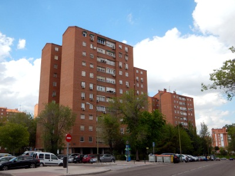

Pavones
Pavones es un barrio que ocupa la zona sureste del distrito de Moratalaz, en la ciudad de Madrid. Sus límites los conforman las calles Luis de Hoyos Sáinz, Laponia, la autopista M-40 y las avenidas del Mediterráneo (A-3) y Fuente Carrantona. El barrio acoge la Junta Municipal del distrito de Moratalaz, el Polideportivo de Moratalaz y el principal templo mormón de Europa, concluido por esta comunidad religiosa el 15 de septiembre de 1998.
Pavones cuenta con una población total de 8856 habitantes. En Pavones se encuentra uno de los intercambiadores de transporte público de Madrid. La estación de Pavones (línea 9) da servicio al centro del barrio. Las líneas de autobús del barrio son:
- 8. Legazpi - Valdebernardo
- 20. Sol/Sevilla - Pavones
- 30. Felipe II - Pavones
- 32. Jacinto Benavente - Pavones
- 71. Manuel Becerra - Puerta de Arganda
- 100. Moratalaz - Valderrivas
- 140. Pavones - Canillejas
- 142. Pavones - Ensanche de Vallecas
- 144. Pavones - Entrevías
- N8. Cibeles - Valdebernardo
- E4. Felipe II - Valdebernardo